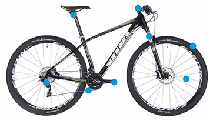

Please Select Problem Area:

-
filter_dramaWheels
-
placeTyre
-
whatshotChain
-
filter_dramaSeat
-
filter_dramaHandlebar
-
filter_dramaBrakes (V-Shape)
-
filter_dramaBrakes (Disc Brakes)
-
filter_dramaSuspension
-
filter_dramaPedal
Punctre Repair
Punctured tires seem to be an inevitable part of bicycling. Experienced cyclists make a habit of carrying the necessary repair materials on their bike at all times. With a little preparation you'll never need to worry about being stranded. Want even more safety and peace of mind on the road? Practice this repair at home.
Things You Will Need:
Parts can be purchased below, or you can book it into your local repair store
- Replacement Inner Tube
- Tire Pump
- Set Of Three Tire Tools (tire Irons)
- Tire patch kit (rubber patches, glue, sandpaper)
1. Remove the wheel from the bike. Most bikes now have a quick-release lever on each axle. Simply flip one of the levers to loosen the wheel. Once loose, the wheel can be pulled free.
2. Older bikes usually have two axle nuts holding each wheel in place. Use an adjustable wrench to loosen one of the nuts, thus allowing the wheel to come free. Completely deflate the tire.
3. Slide the rounded end of one of the tire tools between the tire and the rim. Working slowly and taking care not to pinch the tube, pry the tire away from the rim by locking the free end of the tire tool into the spokes.
4. Slide a second tire tool between the tire and rim. Work this tool around the rim until the tire pops free (see A).
5. If the tool gets stuck, lock the free end into the spokes and begin working with the third tire tool.
6. Remove the tire and inner tube from the rim.

7. Inspect the inner tube for holes by inflating it with a bicycle-tire pump until you can hear air escaping. Many holes are not visible until the tube is highly pressurized.
8. Locate the hole. Hold the tube close to your cheek and feel for escaping air if necessary (see A). Lightly rough up the area around the hole with sandpaper.

9. Apply glue both to the tube and a rubber patch. Wait for the glue to become tacky before applying the patch.
10. Firmly press the patch onto the hole (see B) and allow it to dry for several minutes.
11. Check the tire to fine the source of the puncture by running your fingers around the inside of the tire. Be careful, sharp objects may be imbedded in the tire. Visually inspect the outside of the tire for rips, tears or sharp objects. Be sure to remove the offending object so you don't get another flat!
12. Take a new tire and slip one edge of it all the way around the rim. It should be possible to do this by hand, although you can use one of the tire tools if necessary.
13. Place the inner tube completely inside the new tire, taking care to line up the inner tube valve with the valve hole in the rim (see B). Push the tube as far into the tire as possible. It might help to inflate the tube very slightly.
14. Using your hands, push as much of the second edge of the tire onto the rim as possible. Continue pushing the tube into the tire as needed.
15. Insert a tire tool between the rim and the portion of the tire that is not yet installed.
16. Slowly lever the tool upward and force the tire over the rim edge. Use a second tool to push the tube into place if necessary.
17. Gently roll the tire into place over the rim edge. Work slowly and avoid snapping the tire into place as this tends to pinch the tube and cause air leaks.
18. Inflate the tire to the recommended pressure written on the side of the tire, and replace the wheel on the bike.
Tips & Warnings
There are two types of valves used on bicycle inner tubes: Schrader valves and Presta valves. Schrader valves are identical to the type used on car tires and can be inflated at most gas stations. Presta valves are smaller and lighter and require a special pump.